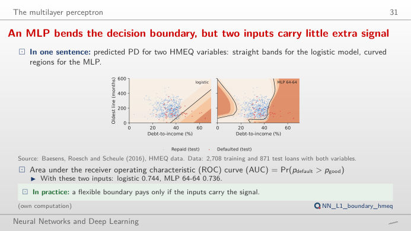
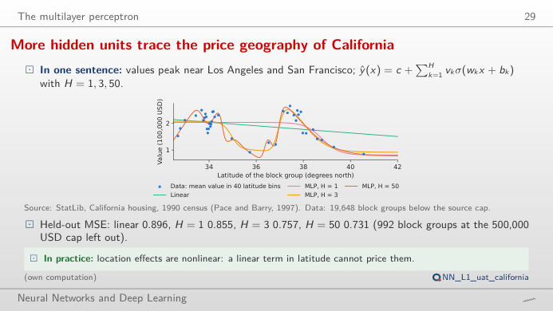
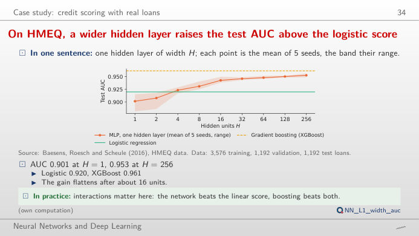
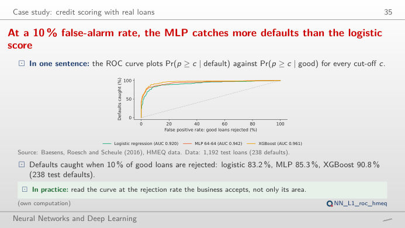
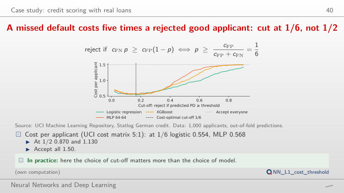

The slide of the lecture is on the left, the same figure on the right, recomputed in your browser from the course data when you move a control. The ▶ button moves the main parameter step by step. Under each figure: a readout, a question for the room and the Quantlet with the code of the chart. No formula is needed to play: move the weights, the number of hidden units or the cut-off and watch what changes.
From one neuron to a multilayer perceptron · From scores to credit decisions
From one neuron to a multilayer perceptron
An MLP bends the decision boundary, but two inputs carry little extra signal

Answer
Debt-to-income raises the risk (w₁ > 0) and an older credit history lowers it (w₂ < 0): the fitted logistic regression gives w₁ = 0.62 and w₂ = −0.48 per standard deviation, with a test AUC of 0.744 on the 871 test loans that report both variables. Flip both signs and the ranking is reversed: the AUC drops to 0.256 = 1 − 0.744. Changing the bias moves the line without rotating it, so it changes how many loans are flagged but not the AUC. The trained MLP 64-64 bends the boundary and reaches 0.736 on the same test loans: with two inputs there is little non-linear structure to find.
More hidden units trace the price geography of California

Answer
One unit gives a single smooth step (test MSE 0.855, against 0.896 for the straight line); three units already capture the two coastal peaks around Los Angeles and San Francisco (0.757); fifty units bring only a little more (0.731) on the 4,912 test block groups. The right panel shows each unit's contribution: the fitted curve is their sum plus a constant. This is the universal approximation theorem at work, and also its limit: a single variable explains only part of the variance (mean squared error, MSE, in squared 100,000 USD).
On HMEQ, a wider hidden layer raises the test AUC above the logistic score

Answer
One hidden unit (AUC 0.901) is a logistic regression with an extra squashing step and does worse than the logistic model (0.920); from 4 to 8 units the MLP passes it (0.923, 0.931) and the gain flattens above 32 units (0.946 to 0.953 at 256). Gradient boosting (XGBoost, 0.961) stays ahead on this small tabular dataset, with far fewer tuning choices. The readout gives the number of parameters: 7,681 at H = 256, against 29 for the logistic regression.
From scores to credit decisions
At a 10 % false-alarm rate, the MLP catches more defaults than the logistic score

Answer
At 0.5 the MLP flags 220 of the 1,192 test loans and catches 76.5% of the 238 defaults, with 4.0% of the good loans flagged by mistake; at 0.2 it flags 290 loans, catches 84.9% of the defaults and flags 9.2% of the good loans. The cut-off moves the point along the ROC curve; the curve itself, and the AUC, do not change. Which point is best depends on the cost of each error, the subject of the next block.
A missed default costs five times a rejected good applicant: cut at 1/6, not 1/2

Answer
No. With costs 5 and 1 the cut-off that minimises the expected cost is 1/(1 + 5) = 1/6 ≈ 0.17 (Bayes decision rule). At 0.5 the cost per applicant is 0.87 for the logistic regression, 1.13 for the MLP and 0.98 for XGBoost, worse than rejecting everyone (0.70); at 1/6 it falls to 0.55, 0.57 and 0.59. Move the cost slider: the best cut-off follows 1/(1 + c), and at c = 1 it is back at 0.5. The differences between the three models are much smaller than the cost of a badly chosen cut-off.
Data: HMEQ home-equity loans (Baesens, Roesch and Scheule, 2016; 5,960 loans), UCI Statlog German credit (1,000 applicants), California housing (StatLib, 1990 census). Splits, models and seeds (20261108 + s) as in the lecture (analysis_L1.py): HMEQ 60/20/20 stratified split; German credit out-of-fold scores of a 5-fold cross-validation; MLP = multilayer perceptron, XGBoost = gradient boosting, AUC = area under the ROC (receiver operating characteristic) curve.